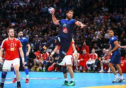
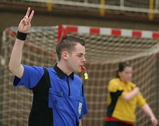
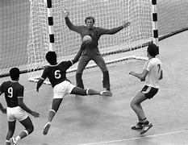

Handebol
Handebol é uma modalidade esportiva, jogada em equipe, em que a bola deve ser conduzida e arremessada somente com as mãos. O grande diferencial é o uso das mãos para a prática do esporte.
Etimologicamente, a palavra handebol surgiu a partir do termo em inglês handball (hand, que significa "mão"; e ball, que quer dizer "bola").

Regras
• O ato de um jogador se deslocar quicando a bola é chamado de drible. A mão do jogador deve estar sempre aberta para que tenha um melhor domínio sobre a bola, e, ao contrário do basquetebol, não é permitido conduzir a bola durante o drible. Além disso, o jogador não pode segurar a bola por mais de três segundos ou dar mais de três passos com ela.
• O goleiro, dentro de sua área de gol e enquanto pratica uma defesa, é o único jogador que pode encostar o pé na bola. Em qualquer outro caso, a bola deverá ser quicada, arremessada ou recebida com as mãos.
• O tronco pode ser utilizado para interromper o andamento do adversário, mas braços e mãos nunca podem ser utilizados.
• É permitido tomar a bola do adversário com as mãos abertas, porém arrancar a bola ou agredir o adversário é contra as regras.
• O time marca ponto quando a bola ultrapassar totalmente a linha do gol.
• Quando a bola cruzar a linha lateral, é cobrado o tiro lateral: o atleta pisa com um pé na linha e, com a bola em mãos, recoloca-a em jogo. Nesse caso, os oponentes devem se localizar a, no mínimo, três metros de distância.
• Ao ocorrer qualquer lance irregular, a cobrança é feita no local onde ocorreu a infração. O time adversário pode formar uma barreira, desde que ela se posicione a três metros da cobrança. Uma curiosidade é que as faltas podem ser cobradas sem o apito do árbitro.
• São dois árbitros por jogo, auxiliados por um cronometrista e um secretário responsável pela súmula.
• O famoso tiro de sete metros é caracterizado pela falta sobre um atacante, quando ele, ao arremessar a bola ao gol, é impedido por uma falta. Para essa cobrança, o árbitro deve apitar, autorizando a jogada. O jogador que executa o tiro deve cuidar para que seus pés não toquem ou ultrapassem a linha de marcação dos sete metros.

História do Handebol
O handebol tem suas raízes na Europa, originando-se no início do século XX como uma alternativa indoor ao futebol. O esporte foi concebido por Karl Schelenz, um professor de ginástica alemão, que adaptou aspectos do futebol, basquete e hóquei para criar um jogo dinâmico e emocionante. O primeiro jogo oficial de handebol ocorreu em 1917 na Alemanha.
A popularidade do handebol cresceu rapidamente ao longo das décadas, com a formação de federações nacionais e a padronização das regras do jogo. Em 1928, o handebol foi apresentado como um esporte de demonstração nos Jogos Olímpicos de Verão em Amsterdã, e tornou-se uma modalidade olímpica oficial em 1972, em Munique, para os homens, e em 1976, em Montreal, para as mulheres.
A Federação Internacional de Handebol (IHF) foi fundada em 1946 para governar e promover o esporte em nível global. Desde então, o handebol tem sido disputado em competições internacionais de alto nível, como o Campeonato Mundial de Handebol e os Jogos Olímpicos, atraindo a atenção de milhões de espectadores em todo o mundo.
Atualmente, o handebol é um dos esportes mais populares e amplamente praticados em todo o mundo, especialmente na Europa, Ásia e América do Sul. O esporte é conhecido por sua rapidez, habilidade técnica e táticas estratégicas, e continua a crescer em popularidade, promovendo valores de trabalho em equipe, fair play e inclusão em comunidades globais.
